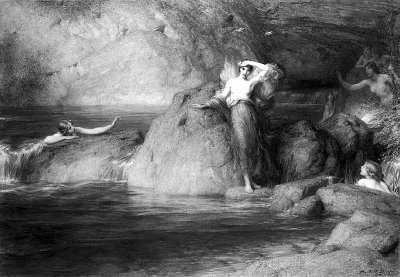

Halkyone
Sabah yıldızı Eosforos'un (Eosphoros) oğlu kral Keyks ile karısı kraliçe Alkyone, çok mutlu bir birliktelik içinde yaşayıp gidiyorlardı. Bu mutluluk, karı-koca olarak baş başa verip yönettikleri ülkenin insanlarına da yansıyordu...
Kardeş halklar olarak algıladıkları komşu krallıkların parasında, malında hiç gözü olmadı karı-koca Keyks'lerin. Ülkelerinde kavga dövüş olmadığı için de günden güne yüzü daha da güleçleşen halk; çalışma saatleri dışında tiyatro, spor yarışmaları, şiir ve destan söyleşileri gibi sanatsal etkinlikler için bolca zaman bulabiliyordu... Ne var ki böylesi bir gelişim ve huzur sonunda ülkenin yakaladığı bu mutluluk ve birikim; komşu kralların kıskançlık ve talan tutkularını kamçılamakta gecikmedi!
Komşu kralların, ülkesinin topraklarında gözü olduğunu, bu yüzden de haince tuzaklar kurduklarını sezinleyen kral Keyks'in huzur ve mutluluğu da, günden güne gölgelenmeye başladı... Bu arada kraliçe Alkyone de son günlerde kocasının davranışlarında gözlemlediği huzursuzluğun nedenini öğrenmek istiyor, ama kocası da fazla bir açıklamada bulunmuyordu... Çünkü çok sevdiği karısını üzmek istemiyordu...
Sarayın demirbaş bilicisi bir gün üzgün krala; denizaşırı bir ülkede, adını bilmediği ama tapınağında tek başına oturan Barış Tanrısı'nın kendisine bir yol yordam gösterebileceğini söyledi...
Umarsız kral Keyks, bilicisinin bu sözlerinden çok etkilendi. Söz konusu Barış Tanrısı'na ulaşabilmek için hemen bir gemi hazırlattı. Ne var ki çok sevdiği kocasını yalnız bırakmak istemeyen kraliçe Alkyone de aynı gemide yer almak istediğini söyledi... Ama kral Keyks de karısıyla birlikte yaşamak istemiyordu bu serüveni. Çünkü menzili belirsiz bu yolculuk sırasında karşılaşacağı iyi kötü olaylar konusunda hemen hemen kesin bir bilgisi yoktu. Uzun tartışmalardan sonra kraliçenin sarayda kalıp ülkeyi başsız bırakmaması konusunda karşılıklı bir anlaşmaya vardılar. Birkaç gün sonra da kraliçe, Barış Tanrısı'nın bulunabileceği bilinmeyen bir menzile doğru yola çıkan kocasını gözyaşlarıyla uğurladı sahilden...
Kralın gemisi, daha yolculuğun üçüncü gününde, dur durak nedir bilmeyen çok azgın bir fırtınaya tutuldu... Bütün çabalarına karşın geminin batacağını anlayan kral Keyks çok üzüldü. Ne var ki bu hüznün hemen arkasından, gemi sulara gömülmeden önce, yüreğinde bir sevinç dalgasının kabardığını da duyumsadı: Çünkü bu yolculuğa birlikte çıkmadıkları için sevgili karısı kendisiyle aynı yazgıyı paylaşmayacaktı!.. Böyle bir rastlantı, onu son deminde sevince boğdu...
Kraliçe Alkyone; emekçilerin tanrıçası Atena'dan öğrendiği örgü örme, nakış işleme gibi uğraşlarla oyalanaraktan kocasının dönüşünü bekliyordu sabırsızlıkla. O yüzden diktiği bazı giysilerin üstüne, kendilerinin ve ülkelerinin mutluluğunu yansıtan ve gelecekleriyle ilgili şekiller, desenler nakışlıyordu durmadan... Ama bir yandan da tanrıça Hera'ya, kocasının tez elden ve sağ salim dönebilmesi için yalvarıp yakarıyordu... Sürekli kocası Baştanrı Zeus'la didişen, bu yüzden de insanların sorunlarıyla uğraşacak zaman bulamayan tanrıça Hera, bu son olayda kraliçe Alkyone'ye çok acımakla yetiniyordu yalnızca! Çünkü kocası Baştanrı Zeus'un barışsever kralları sevmediğini ve onları bir şekilde cezalandırdığını, üzülmesin diye söyleyemiyordu Alkyone'ye!.. Sonunda Hera, gökkuşağının tanrıçası İris'i çağırdı yanına. "Git, uyku tanrısı Hipnos'a söyle. Zavallı Alkyone'nin düşüne girsin; ona kocası Keyks'in denizde boğulduğunu söylesin!" buyruğunu verdi.
Haberci tanrıça İris; rengârenk ebemkuşağına atladığı gibi bir solukta, masmavi göklerin derinliklerindeki uyku tanrısı Hipnos'un mağarasına doğru süzülüp gitti... Bu mağaranın içinde, pırıl pırıl çakıl taşlarının arasından akan bir dere vardı. Tanrı Hipnos, bu derenin tatlı şırıltısını her gece insanların yorgun dünyalarına buradan gönderiyor, onları sıkıntılarından arındırmaya, rahatlatmaya çalışıyordu. Tanrıça İris, Hera'nın isteğini iletti uyku tanrısı Hipnos'a.. Hipnos da; istediği her insanın kılığına girebilen oğlunu, bahtsız kraliçe Alkyone'nin yatak odasına gönderdi. Kral Keyks'in kılığına giren Hipnos'un oğlu, Alkyone'nin düşüne girdi ve gemisinin nasıl battığını bir bir anlattı. Sonra da ona karşı duyduğu derin sevgisini ve bağlılığını yineledi gözyaşlarıyla. Bundan böyle ülkeyi yönetme görevinin artık kendisine kaldığını söyledi. "Ben şimdi Ölüler Ülkesi Hades'e gidiyorum!" deyip ona veda etti. "Dur, ben de geliyorum!" diye bir çığlık atan kraliçe kan ter içinde uyandı... Her seferinde kafasından kovduğu bir kuşkunun acı gerçekliği, artık gelip ta yüreğine bir zıpkın gibi saplandı. Demek kocası ölmüştü!.. "Ben onsuz yaşayamam!" diye kendi kendine söylenmeye başladı. Pencereden dışarıya baktı: Ortalık yeni yeni ışımaya başlamıştı. Biraz öteden kızıl rubalı şafak tanrıçası Eos, rengârenk bir sabahı getiriyordu insanların ve tanrıların dünyasına... Daha birkaç hafta önce kral kocasını, deniz ötelerinde bilinmeyen bir yerlerde yaşayan Barış Tanrısı'na doğru uğurladığı limanı anımsadı birden... Apar topar giyinip saraydan dışarı çıktı...
Sözkonusu limana doğru tir tir titreyerekten yürürken, olup bitenleri yeni baştan gözden geçiriyordu kafasında. O korkunç düşü görmezden önce Alkyone; kocası kral Keyks'in, Barış Tanrısı'nın bağışlayacağı renk renk, bir kucak dolusu barış çiçekleriyle döneceğini ve onları bütün Akdenizli kardeş halklara birlikte dağıtacaklarını düşlüyordu hep... Bunları düşüne düşüne yol alan Alkyone, limana vardığını anladı. Biraz ötedeki yüksek bir kayalığın keskin uçurumlu doruğuna doğru tırmandı. Ve tırmandığı doruktan, sevgilisi ve kocası Keyks'le buluşmak üzere, gözlerini yumup o büyük boşluğa bırakıverdi kendini!.. Artık habire düşüyor, düşüyordu Alkyone... Ama bir türlü bir yerlere değmiyordu ayakları! Dayanamayıp gözlerini açtığında, bembeyaz bir martıya dönüştüğünü, mavi suların üstünde süzülüp gittiğini gördü! Biraz daha yakından bakınca, yanında kendisine yoldaşlık eden bir martı gördü. Ve birden onun martıya dönüşmüş kocası olduğunu sezinledi sevinçle... Kocası da onu tanıyınca hemen coşkuyla, kanat kanada kenetlendiler... Ve öteki martılarla birlikte çığlıklar ataraktan, deniz üzerinde, barış kaynağı ufuklara doğru bir zıpkın gibi kayıp gittiler...
Kraliçe Alkyone'nin yaşadığı bölgedeki deniz, yılda yedi gün dingin ve sessiz olurdu. Çünkü bu yedi gün süresinde, denizin durgun suları üzerinde kuluçkaya yatardı bütün martılar. Onun için de denizin durgun olduğu bu yedi güne, "Alkyone Günleri" ya da "Barış Günleri" diyordu o yörelerdeki Akdenizli halklar...
Akdenizli halklar öylesine barışa ve Alkyone'ye hasrettiler...